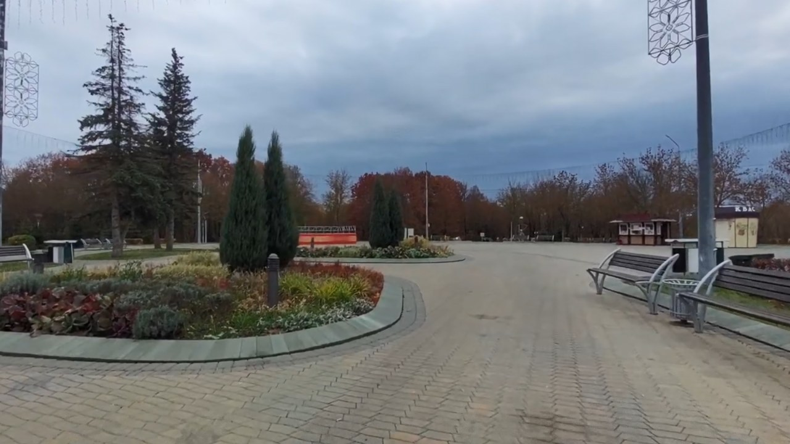

Бюст
Остановка на маршруте, посвящённая одному композитору.
Минск · Парк имени Павлова
Прогулка у воды, где можно познакомиться с композиторами и услышать их музыку.
Узнать о маршрутеИдея проекта
Предлагаем разместить вдоль прогулочных дорожек вокруг водной части парка имени Павлова бюсты композиторов, связанных с музыкальной культурой Беларуси.
Рядом с каждым бюстом установят информационную табличку с кратким рассказом о композиторе и кнопку. При нажатии на кнопку запись его произведения зазвучит из встроенного динамика.
Остановка на маршруте, посвящённая одному композитору.
Имя и краткая биография композитора.
Нажмите кнопку у бюста, чтобы услышать запись произведения через встроенный динамик.
Предлагаемая локация
Для маршрута рассматривается западная часть парка имени Павлова в Московском районе Минска. Бюсты предлагается разместить вдоль дорожек вокруг водной части парка.
При выборе места авторы проекта опирались на идею «Сад музыки» из материалов «Минской смены — 2025».
Открыть парк на карте
Музыкальное наследие
Имена из предварительного списка проекта.
По этому запросу ничего не найдено.
Подборка записей
Полонез, традиционно приписываемый М. К. Огинскому · Sk444~commonswiki, электрический контрабас · CC BY-SA 3.0
Станислав Монюшко · опера
Музыка Игоря Лученка, слова Янки Купалы · ансамбль «Песняры»
Музыка Эдуарда Ханка, слова Анатолия Поперечного · ВИА «Верасы»
Владимир Мулявин и ансамбль «Песняры» · музыкальная притча по Янке Купале
Михаил Ельский · фрагмент, скрипка — Лев Горелик
Николай Аладов · симфониетта на белорусские народные темы
Евгений Тикоцкий · «Плача рэчка з ручайкамі», II действие
Владимир Оловников · слова Алеся Бачило
Анатолий Богатырёв · Государственный академический симфонический оркестр Беларуси, дирижёр Михаил Козинец
Дмитрий Смольский · опера, запись спектакля 13 февраля 2024 года
Сергей Кортес · стихи Янки Купалы, ансамбль «Песняры»
Олег Ходоско · Симфонический оркестр Белтелерадиокомпании, дирижёр Александр Высоцкий
Виктор Копытько · Государственный камерный хор Республики Беларусь, дирижёр Игорь Матюхов
Андрей Мдивани · запись с сайта композитора